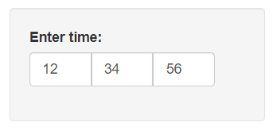

shinyTime 
Overview
shinyTime provides a timeInput widget for Shiny. This widget allows intuitive time input in the hh:mm:ss or hh:mm (24-hour) format by using a separate numeric input for each time component. Setting and getting of the time in R is done with date-time objects.
Installation
# Install from CRAN
install.packages("shinyTime")Usage
As the shinyTime package mimics the existing shiny functionality, using the package is easy:
ui <- fluidPage(
# Using the default time 00:00:00
timeInput("time1", "Time:"),
# Set to current time
timeInput("time2", "Time:", value = Sys.time()),
# Set to custom time
timeInput("time3", "Time:", value = strptime("12:34:56", "%T")),
# Set to custom time using hms
timeInput("time4", "Time:", value = hms::as_hms("23:45:07")),
# Set to custom time using character string
timeInput("time5", "Time:", value = "21:32:43"),
# Use hh:mm format
timeInput("time6", "Time:", seconds = FALSE),
# Use multiples of 5 minutes
timeInput("time7", "Time:", minute.steps = 5)
)Note that setting an initial value can be done with date-time (in the same way as setting a date in dateInput can be done with a Date object), but also with an hms::hms object or character string in hh:mm:ss format.
The value retrieved will be a date-time object (POSIXlt). You need to convert it to character to be able to show the time, as the default character representation does not include time. For example:
server <- function(input, output) {
# Print the time in hh:mm:ss everytime it changes
observe(print(strftime(input$time1, "%T")))
# Print the time in hh:mm everytime it changes
observe(print(strftime(input$time4, "%R")))
}For a demo, visit the online example app or try the shinyTime::shinyTimeExample() function.